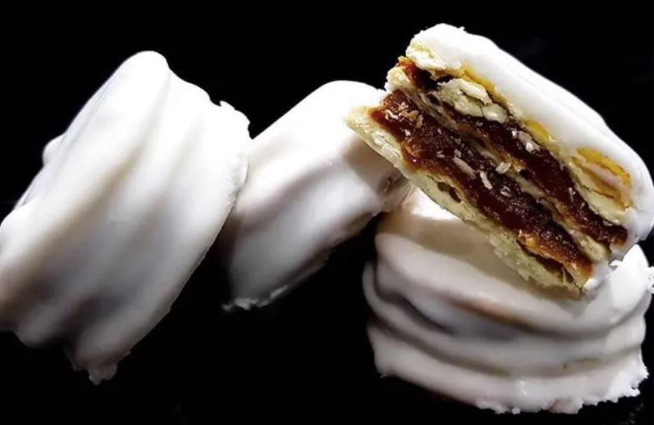
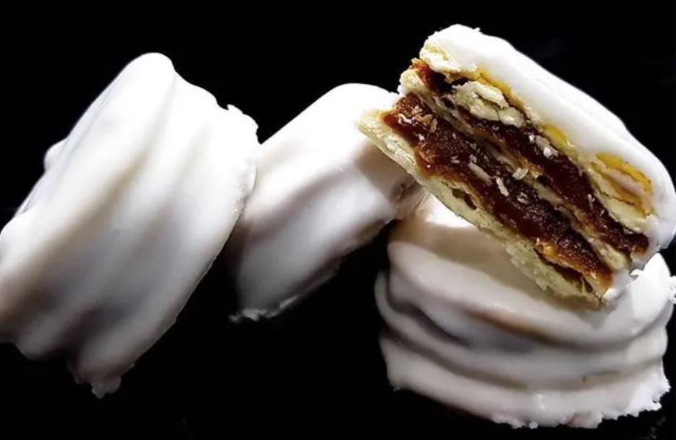

Donde surge este exquisito postre?
El alfajor santafesino está unido a la historia de la ciudad de Santa Fe. Su popularidad surge con la realización de la Convención Constituyente en el año 1853. Fue en esa ocasión cuando nuestros alfajores fueron conocidos por todo el territorio nacional de la mano de los 23 constituyentes que, luego de vivir 6 meses en Santa Fe, eligieron este postre para llevarlo de recuerdo a sus hogares. "Y transcurre ese 1º de mayo de 1853 y poco a poco los convencionales, cumplida su misión, se alejan por los caminos fatigosos que ya hicieron, rumbo a sus provincias. Agregan a los equipajes unos alfajores santafesinos para que saboreen las esposas, las hijas, las novias que allá los esperan. Y llevan sin duda algo más, el recuerdo feliz de sus días en Santa Fe”. Mateo Booz, Aleluyas del Brigadier (1936).
 

Ahora sí, pasemos a la receta:
Ingredientes
PARA EL BAÑO
- Azucar 200 g
- Agua 50 cc
- Jugo de limón unas Gotas
- Clara de huevo 1 Unidad
- Azúcar impalpable 200 g
PARA EL RELLENO
- Dulce de leche repostero (Cantidad necesaria)
PARA LA MASA
- Yemas 5 Unidades
- Agua 90 a 100 cc
- Harina 0000 500 g
- Licor de anís 1 cda
- Manteca o grasa fina de cerdo 100 g
- Sal 1 cdita
Ahora que ya contás con todos los ingredientes, Te invitamos a escuchar una cumbia Santafesina mientras hacés esta receta:
Paso a Paso
- Para comenzar, tamizamos la harina y formamos una corona. Colocamos en el hueco las yemas, la sal, el licor y el agua tibia. Integramos todos los ingredientes y agregamos la manteca por trocitos.
- Sobamos la masa durante 10 minutos, hasta que quede lisa y elástica. Tapamos con film y dejamos descansar durante 30 minutos a temperatura ambiente.
- Pasado ese tiempo, estiramos hasta lograr un espesor de 3 mm. Cortamos tapas con cortapastas de 8 cm de diámetro (o del tamaño que se desee). Pinchamos con un tenedor y las colocamos en placas.
- Horneamos a 200ºC durante pocos minutos, hasta que empiecen a tomar color.
- Dejamos enfriar.
- Untamos las tapas con dulce de leche y las unimos de a dos para armar los alfajores.
- Para el baño, batimos la clara con el azúcar impalpable y el jugo de limón hasta lograr un glasé espeso y blanco. Luego, hervimos el agua con el azúcar durante 5 minutos y volcamos sobre el glasé mientras se bate con un batidor de mano.
- Bañamos los alfajores de inmediato y dejamos orear.